BIOTECNOLOGÍA DE PRECISIÓN: LA NUEVA ERA DE LA COMUNICACIÓN CELULAR
Fundamentos Biofísicos de los Exosomas Autólogos y Bioimplantes Híbridos (MCT + Exo-Tech)
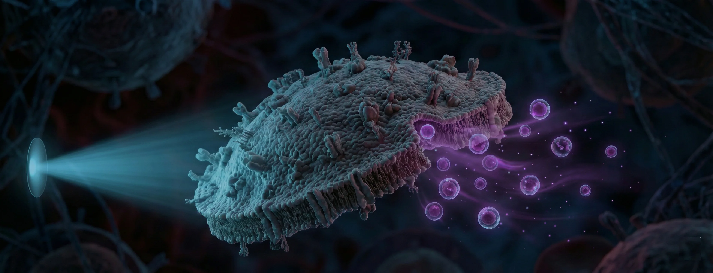
EL PARADIGMA EXOSOMAL: PROMESA TERAPÉUTICA VS. REALIDAD REGULATORIA
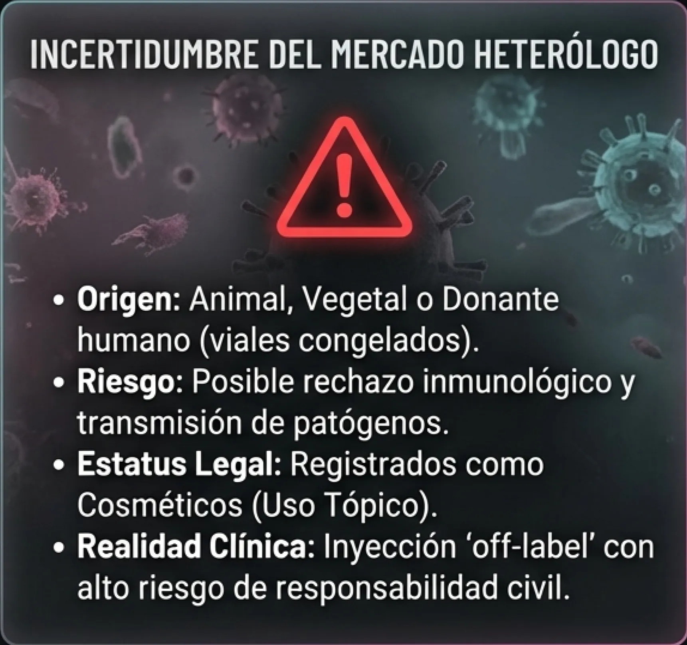
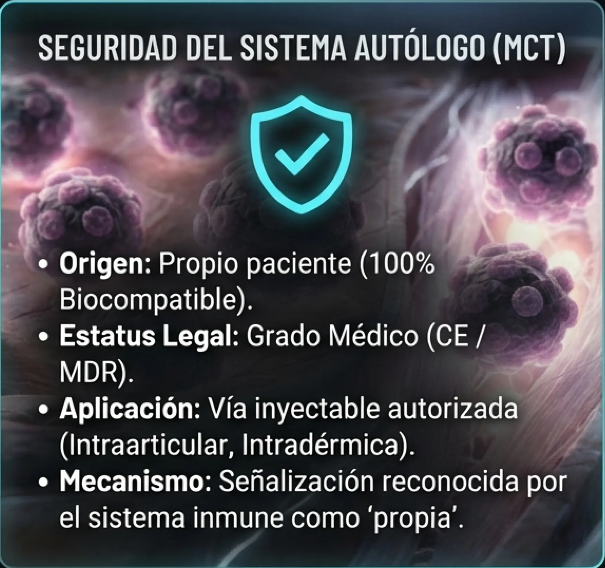
ARQUITECTURA MOLECULAR DEL MENSAJERO
Más allá de los Factores de Crecimiento
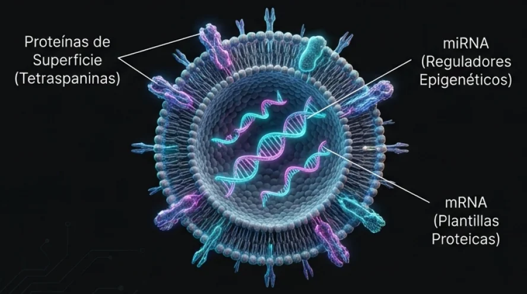
Vesículas Extracelulares (EVs):
Nanotransportadores de información genética
(30-150nm).
- miRNA: Actúan post-transcripción silenciando o activando genes específicos.
- mRNA: Plantillas para síntesis proteica inmediata.
SALTO TECNOLÓGICO: DE LA QUÍMICA A LA FÍSICA
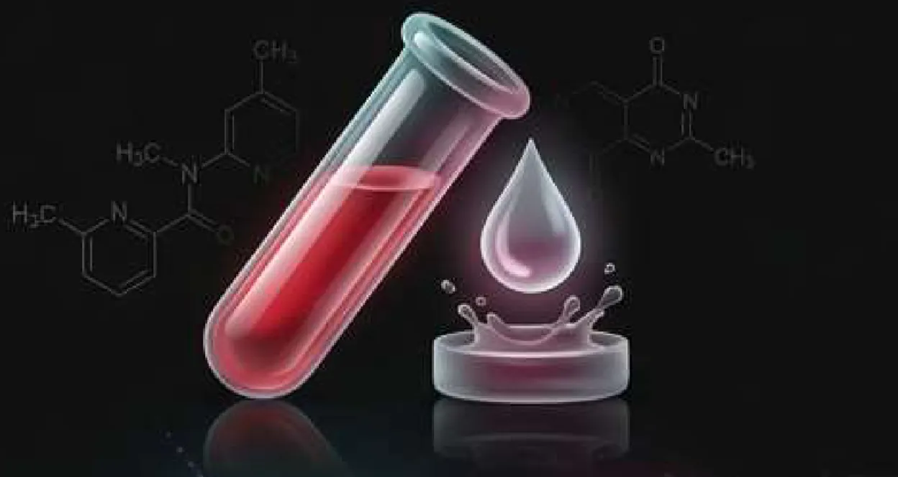
PRP CONVENCIONAL (QUÍMICO)
- Activación: Cloruro Cálcico / Trombina.
- Efecto: Degranulación súbita 'en bolo'.
- Limitación: Vida media corta, liberación no controlada.
- Status: DEPÓSITO PASIVO
META CELL TECHNOLOGY (MCT)
- Activación: Luz Azul + Temperatura Controlada.
- Efecto: Síntesis de novo y cinemática optimizada.
- Ventaja: Reprogramación celular ex vivo.
- Status: FÁBRICA ACTIVA
FUNDAMENTO BIOFÍSICO I: FOTOTRANSDUCCIÓN (LUZ AZUL)
Luz Azul (400-490nm)
Activación de Opsinas (Fotorreceptores)
Apertura canales iónicos mitocondriales
Incremento expresión miRNA
Mecanismo Cromóforo:
Las células sanguíneas poseen opsinas sensibles a longitudes de onda específicas.
Resultados Clínicos:
- Potenciación de capacidad pro-angiogénica (MSCs).
- Modulación de respuesta inflamatoria (Macrófagos M1 a M2).
FUNDAMENTO BIOFÍSICO II: TERMODINÁMICA Y METABOLISMO
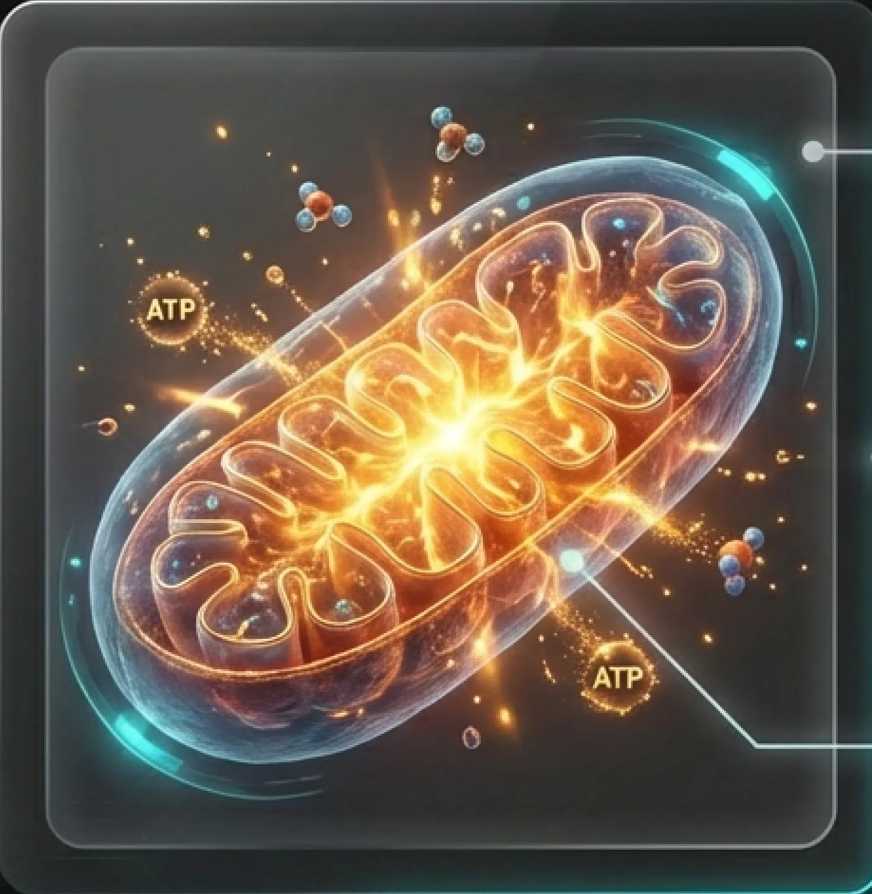
Cinética de Liberación:
El calor aumenta la fluidez de la membrana lipídica, facilitando la fusión y liberación vesicular.
Disponibilidad:
Reducción de exosomas 'anclados' (tethered) → Aumento de fracción libre.
Energía (ATP):
Estimulación del metabolismo oxidativo.
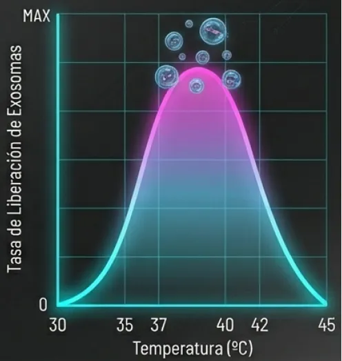
PERFIL MOLECULAR DEL INYECTABLE: EVIDENCIA CUANTITATIVA
Concentración de Partículas
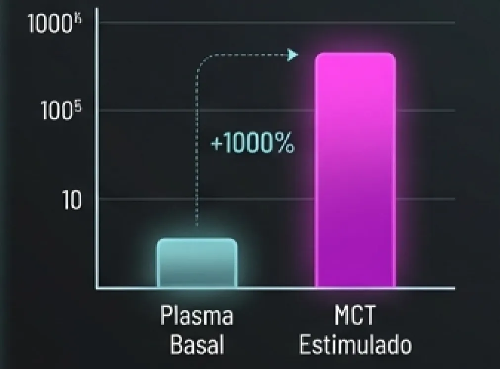
Aumento logarítmico de EVs nanométricas
Carga de miRNA
Upregulación de marcadores para condrogénesis y tenogénesis
Inmunomodulación
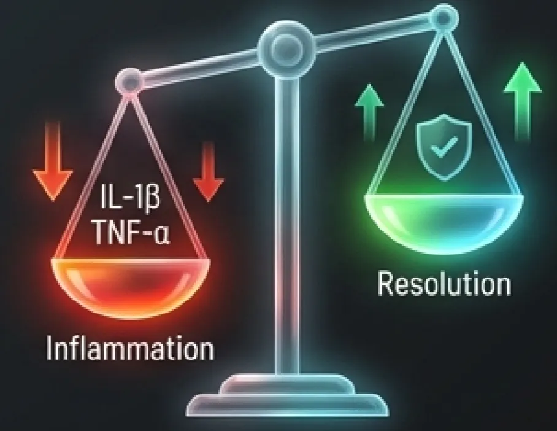
Reducción de IL-1β y TNF-α. Polarización a fenotipo reparador
EXO-TECH: EL PRIMER BIOIMPLANTE DE EXOSOMAS
Sistema de Liberación Controlada (Drug Delivery)
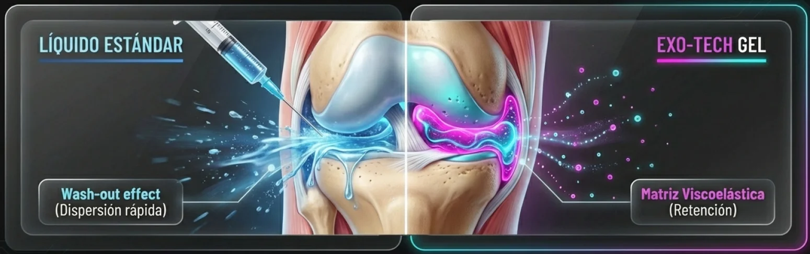
MATRIZ DE SEGURIDAD Y CUMPLIMIENTO REGULATORIO
| Característica | MCT / Exo-Tech (Autólogo) | Exosomas Heterólogos |
|---|---|---|
| Origen | Paciente (Propio) | Vegetal / Animal / Donante |
| Regulación | Producto Sanitario (MDR/CE) CE | Cosmético (Uso Tópico) |
| Vía de Uso | Inyectable Autorizado | Inyección Ilegal / Off-label |
| Inmunidad | 100% Compatible | Riesgo Reacción Cruzada |
| Trazabilidad | Circuito Cerrado | Cadena de frío incierta |
WORKFLOW CLÍNICO INTEGRADO
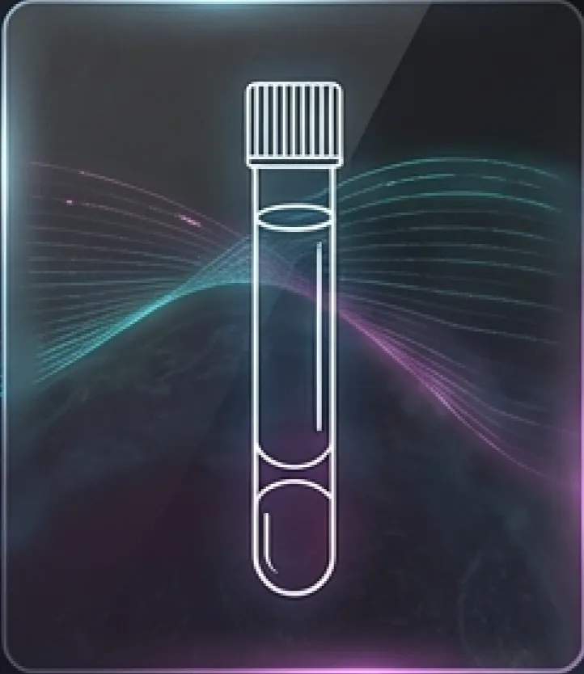
Sistema Cerrado. Alta recuperación plaquetaria (>80%).
Bioestimulación Fototérmica. Luz Azul + Temp.
Creación del bioimplante / gel viscoelástico.
Inyección ecoguiada precisa.
CRITERIO DE SELECCIÓN TERAPÉUTICA
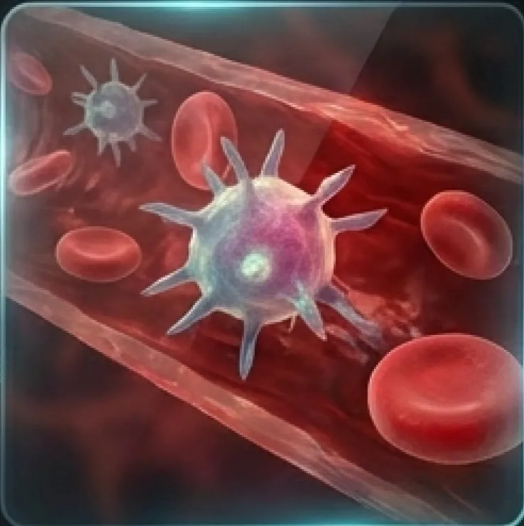
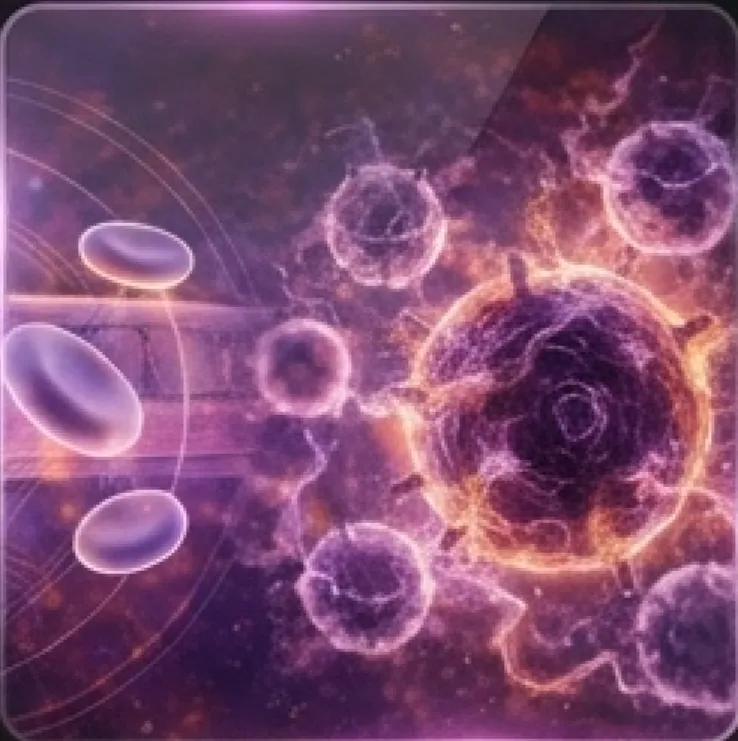
PRP CONVENCIONAL
- Lesiones Agudas / Subagudas
- Pacientes Jóvenes
- Tejidos Vascularizados
- Respuesta basal alta
Cuando la biología del paciente está agotada, no basta con concentrarla (PRP); hay que reactivarla (MCT).
MCT + EXO-TECH (EXOSOMAS)
- Patologías Crónicas (Artrosis G3-4)
- Inflamación Persistente
- Tendinopatías Hipovasculares
- Pacientes de edad avanzada (Refuerzo ATP)
REDEFINIENDO EL ESTÁNDAR DE LA MEDICINA REGENERATIVA
BIOFÍSICA
sobre Bioquímica
(Luz y Calor)
INSTRUCCIÓN
sobre Nutrición
(miRNA)
PERMANENCIA
sobre Dispersión
(Exo-Tech)
SEGURIDAD TOTAL
(Autólogo + MDR)